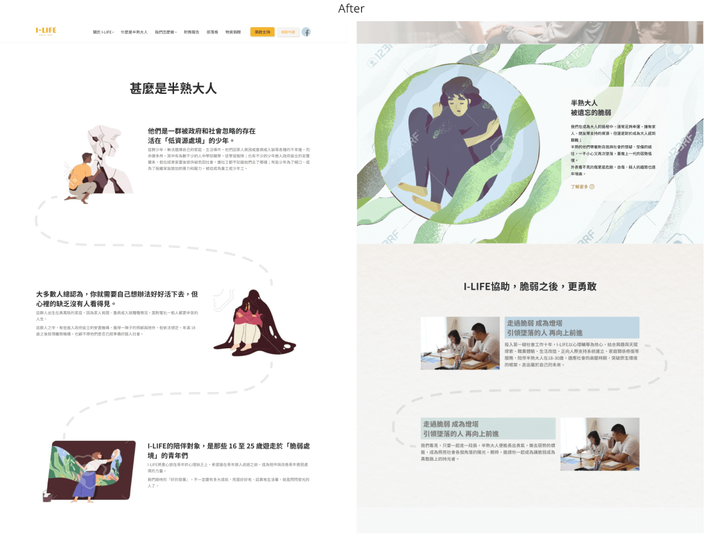
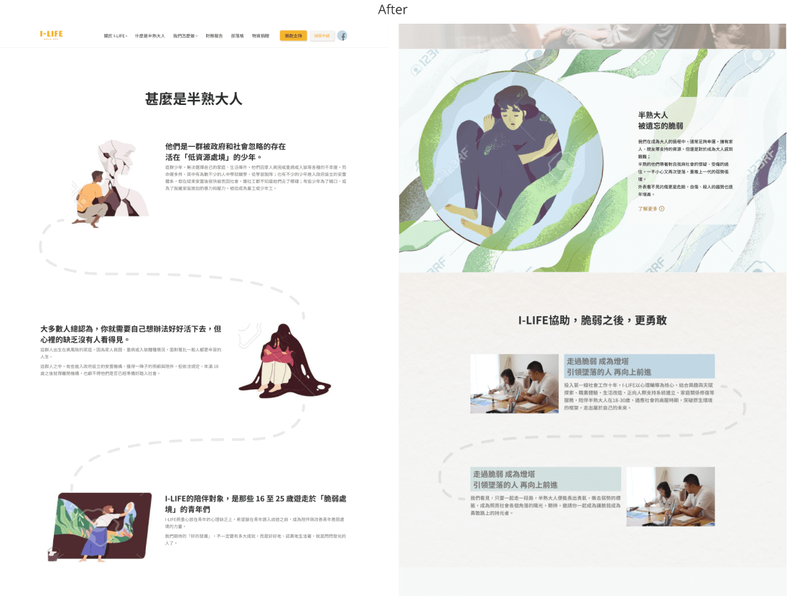

I-Life Website Redesign
I-LIFE is a social enterprise that helps people between the ages of 18 and 25 who have no government support and are struggling in life. They needed a new official website to create an outstanding image for the organization and establish links between donors and the people they help. The old website made it difficult for users to find the information they needed, and it was built on Wix, making it difficult to do SEO to make it easy for people to search.
Role
UI/UX Designer and UX Researcher
Device
Mobile and Desktop
Tools
Figma, Illustrator, Photoshop, Zeplin and WordPress
Published
October 2021
Project Goal
- Increase potential donors
- Deepen the connections between donors and I-Life
- Increase website's exposure
- Understanding what motives will make people donate, and what image I-LIFE present will make them resonate to know more
- Make users feel more involved when they donate
Pain Point
- Information on the website is not clear, so potential donors cannot find the information they are seeking easily
- The current website lack of case sharing, so users cannot understand why they need help and develop empathy
- The current website cannot Increase website's exposure
- I-Life does not have people who know how to operate the website, so they cannot maintain, increase content and features
Key Challenge or Constraint
- Increase donations
- Helping people understand why adults may still need assistance
- Features are limited as this website will be built on WordPress
Double Diamond Model
Stakeholder Interview
The website needs make donors feels resonate with this issue. Find the main concept based on the interview to build the website.
Ming Yang - Co-founder & CEO
I hope that users will be able to see and understand the emotions of heaviness and acceptance. I also hope that they will be moved emotionally after browsing the website.
Meryl Yang - Brand and Resource Development
Sharing adolescent psychological issues and mass communication.
Ming Yang - Co-founder & CEO
Currently, donors are willing to donate because they feel moved by the stories I-Life shares in the offline activities.
Ming Yang - Co-founder & CEO
This issue is resonate to everyone.
Users Interview
Know what will make user want to donate and how they donate through depth interviews.
- How users assess the credibility of donating organizations
- What reasons will make users donate and how they donate
- What donation experience will make them feels satisfaction/dissatisfaction
- What reply or information users want to get after donating
Usability Testing
Ask users browsing the current website to know what is the image I-Life present and the user experience of the donation process.
- Ask users to browse the current website to understand the image I-LIFE presenting
- Ask users how to donate on the current website
- Ask users which content caught their interest
Create Persona - Point of View
Develop the point of view based on user research, and define what is the important issue for us.
We classified sticky notes into groups and named them, find out what are the hidden common messages of the sentences through ideate, to avoid superficial classified.


Persona
Summarize the common behaviors of the five interviewees as the user
Design Insight
Mrs. Kao - Designer
I do not like to see all those numbers about how many people they helped, I want to see how I-Life changed and helped their life when I browse the website.
Mrs. Kao - Designer
I do not like some organizations take advantage of the people they are helping, they can present their stories or fake name, but I do not like them posting their real identity.
Ms. Kuo - Nanny
There have share cases, I want to check out their feedback and stories to make sure it is real.
Mrs. Hu - Civil Servant
Care about what will change in their life after donated.
HMW
Disassemble the point of view in different ways, and use "how can we..." to convert it into a question that helps to think.
Find Insight of the Website
Find insights based on user interview results, and we vote on the most feasible solutions.
Refined Solution
Storytelling
Use storytelling layout to explain why they are adults but need help.
 

How We Do
Add case sharing and plan flows section and prioritization it for potential donors to understand how I-Life help them.
Material Donation Page
Add material donation page, so that donors are not limited to donating money but also donating items.
Blog
Add blog page to let users know more about their stories and deepen the connection.
News and Media
Add a news and media report page to increase the credibility of I-Life and provide users with the latest news about them.